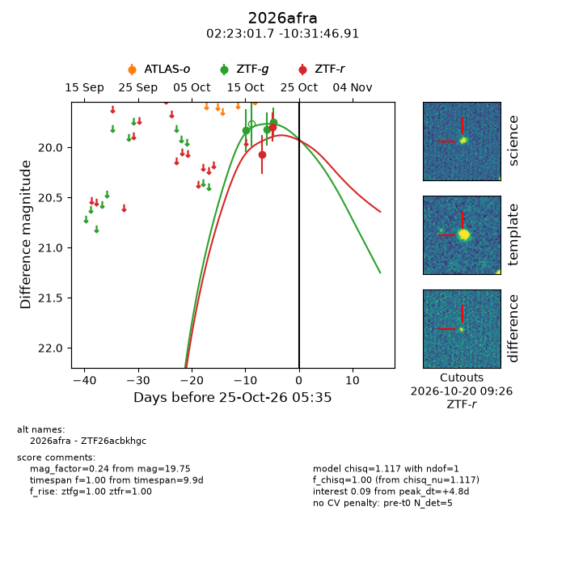
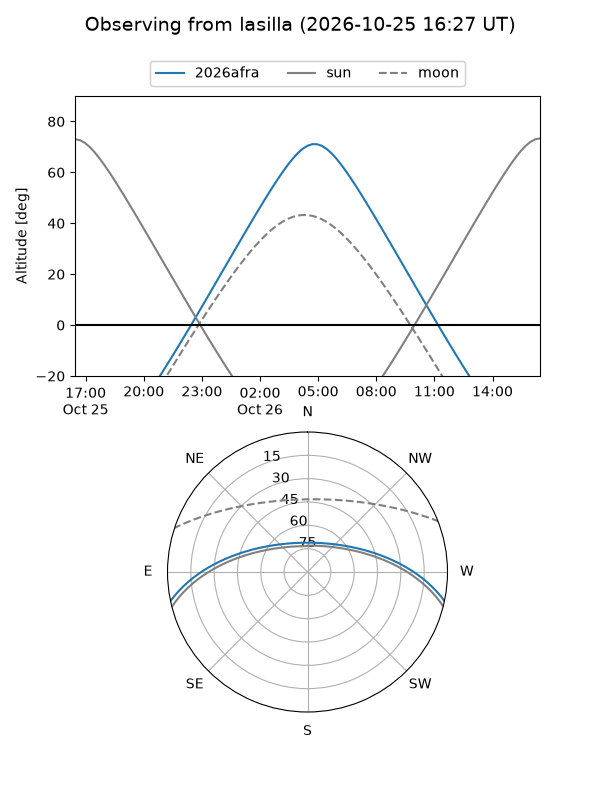
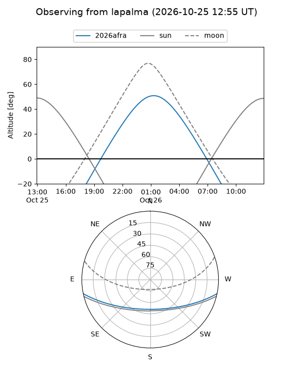
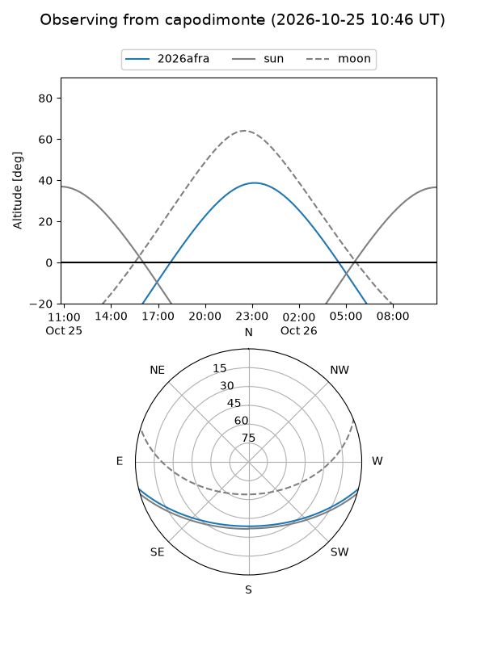
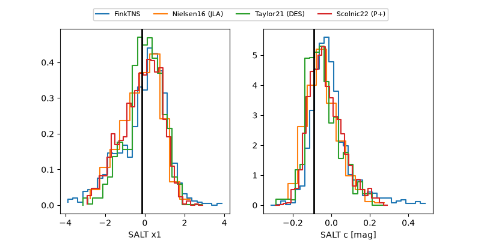

2026afra
Target 2026afra at 2026-10-25 17:26
Aliases and brokers:
FINK-ZTF: ztf.fink-portal.org/ZTF26acbkhgc
Lasair-ZTF: lasair-ztf.lsst.ac.uk/objects/ZTF26acbkhgc
ALeRCE-ZTF: alerce.online/object/ZTF26acbkhgc
YSE-PZ: ziggy.ucolick.org/yse/transient_detail/2026afra
TNS name: wis-tns.org/object/2026afra
Direct TNS query: direct search
alt names
ZTF26acbkhgc (ztf,fink_ztf)
2026afra (tns,yse)
Coordinates:
equatorial (ra, dec) = 35.7572,-10.52970
equatorial (HMS+DMS) = 02:23:01.74,-10:31:46.91
galactic (l, b) = (179.7305,-62.79547)
Flags:
peak dt: +5.3
Photometry:
last ztfg=19.75, ztfr=19.79
3 ztfg, 2 ztfr detections
Lightcurve

Visibility



Additional plots
